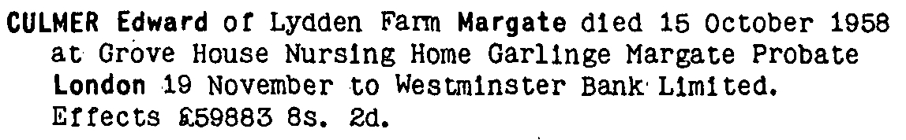
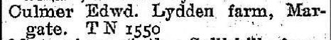
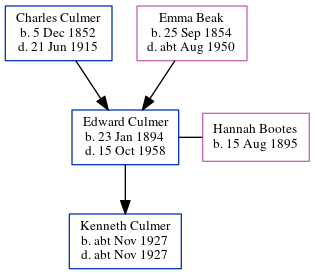

Edward Culmer 1894 - 1958
[ Home ] | [ Calendar ] | [ Surnames Index ] | [ Census Index ] | [ Family History ]A market gardener and the child of Charles Culmer (an agricultural laborer) and Emma Beak, Edward Culmer, the first cousin twice-removed on the mother's side of Nigel Horne, was born in Sarre, Kent, England on Jan 23, 18941,2, was baptized in St Nicholas-at-Wade, Kent, England on Mar 18, 1894 and married Hannah Bootes (with whom he had 1 child, Kenneth E) in Thanet, Kent, England around Nov 19253.
During his life, he was living at 1 Chalk Hole Cottages, Flete, Kent on Mar 31, 19016; at Newports Lydden Farm, Flete, Kent on Apr 2, 19117; and at Lydden Farm, Valley Road, Flete, Kent in 19384, on Sep 29, 19391, in 19535 and in 1958.
He died on Oct 15, 1958 at Grove House Nursing Home, Garlinge, Kent2.
Parents
- Charles was born on Dec 5, 1852
- Emma was born on Sep 25, 1854
Children
- Kenneth E was born c. Nov 1927
Citations
- 1939 Register - Findmypast (was the head of the household)
- England & Wales deaths 1837-2007 - Findmypast
- England & Wales marriages 1837-2008 - Findmypast
- 1938 Kelly's Directory
- 1953 Kelly's Thanet Directory
- 1901 England, Wales & Scotland Census - Findmypast (was age 7 and the son of the head of the household)
- 1911 Census for England & Wales - Findmypast (was age 17 and the son of the head of the household)
Media
1939 UK Census

Edward Culmer - Probate

1901 UK Census

1938 Kelly's Directory

1953 Kelly's Thanet Directory

England & Wales deaths 1837-2007 - BMD/D/1958/4/AZ/000232/047
England & Wales births 1837-2006 Transcription - BMD-B-1894-1-AZ-000138-166
Canterbury Baptisms Transcription - GBPRS-CANT-B-96802417
1901 England, Wales & Scotland Census Transcription - GBC-1901-0005521445
1911 England, Wales & Scotland Census Transcription - GBC-1911-RG14-04484-0167-3
1939 Register Image - TNA-R39-1752-1752G-013
England & Wales marriages 1837-2008 - BMD/M/1925/4/AZ/000250/016
England Births & Baptisms 1538-1975 - R_884660598
Family Tree
Generated by ged2site. Last updated on Jun 11, 2024